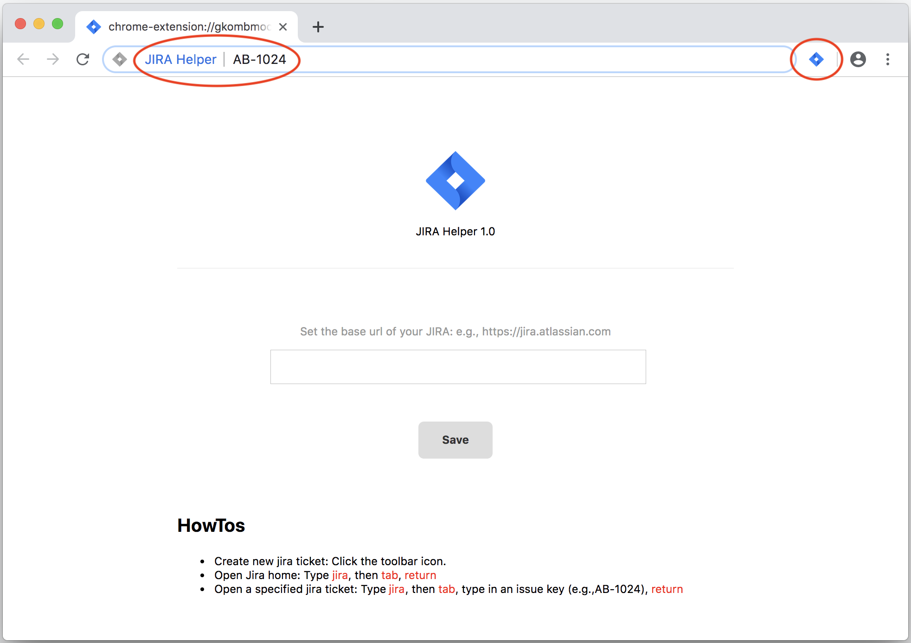

JIRA Helper 1.0
Set the base url of your JIRA: e.g., https://jira.atlassian.com
Save
HowTos
Create new jira ticket: Click the toolbar icon.
Open Jira home: Type
jira
, then
tab
,
return
Open a specified jira ticket: Type
jira
, then
tab
, type in an issue key (e.g.,AB-1024),
return
